Abaixo, uma lista de gráficos que informam a situação do estado do Amazonas em
relação ao transporte e segurança alimentícia.
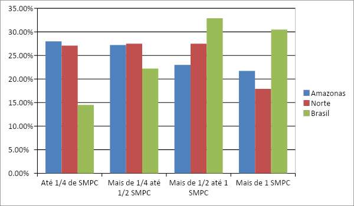
Renda domiciliar per capita mensal, Brasil, macrorregião Norte e Unidade da
Federação.SA/IA e Covid-19, Brasil, 2021/2022.
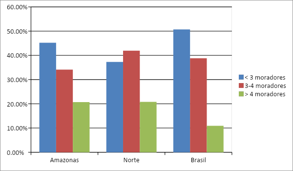
Número de moradores, Brasil, macrorregião Norte e Unidade da Federação.
SA/IA e Covid-19, Brasil, 2021/2022.
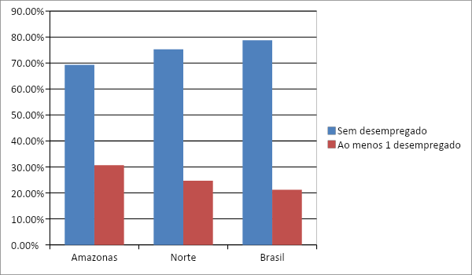
DESEMPREGO, Brasil, macrorregião Norte e Unidade da Federação.
SA/IA e Covid-19, Brasil, 2021/2022.
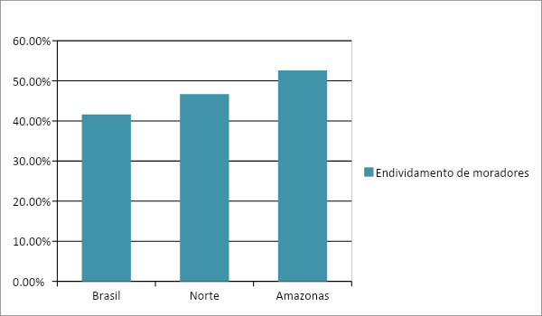
Efeito da pandemia nas condições financeiras, Brasil, macrorregião Norte e Unidade da
Federação.
SA/IA e Covid-19, Brasil, 2021/2022.
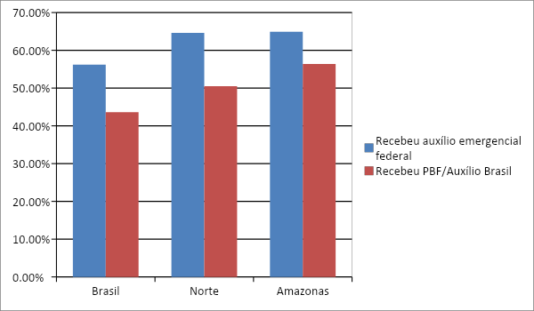
Recebeu auxílio emergencial federal, Brasil, macrorregião Norte e Unidade da Federação.
SA/IA e Covid-19, Brasil, 2021/2022.
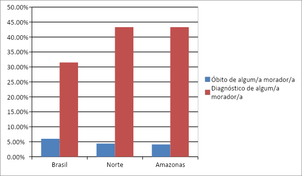
Covid-19 no domicílio, Brasil, macrorregião Norte e Unidade da Federação. SA/IA e Covid-19,
Brasil, 2021/2022.
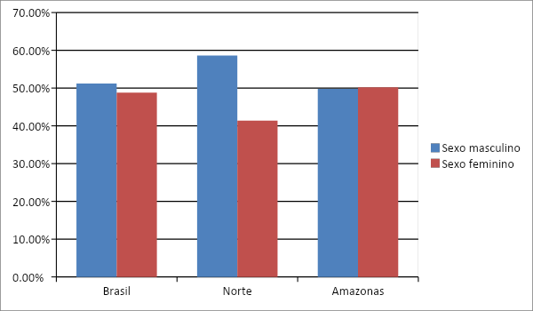
Pessoa de referência/ responsável pelo domicílio Brasil, macrorregião Norte e Unidade da
Federação. Brasil, 2021/2022.
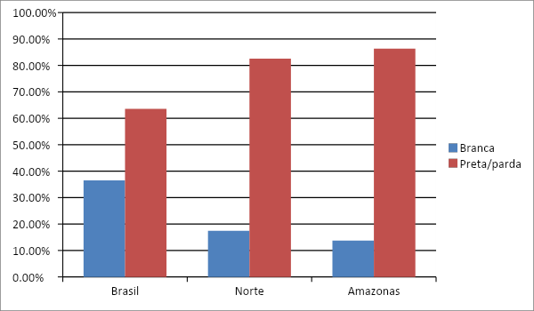
Raça/cor da pele Brasil, macrorregião Norte e Unidade da Federação. Brasil, 2021/2022.
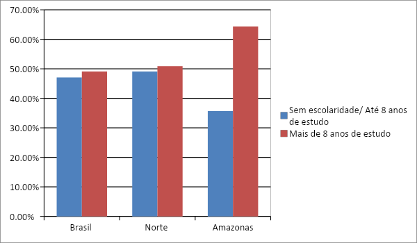
Escolaridade no Brasil, macrorregião Norte e Unidade da Federação. Brasil, 2021/2022.
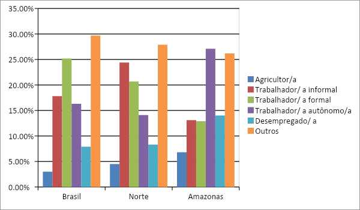
Ocupação de emprego no Brasil, macrorregião Norte e Unidade da Federação. Brasil, 2021/2022.
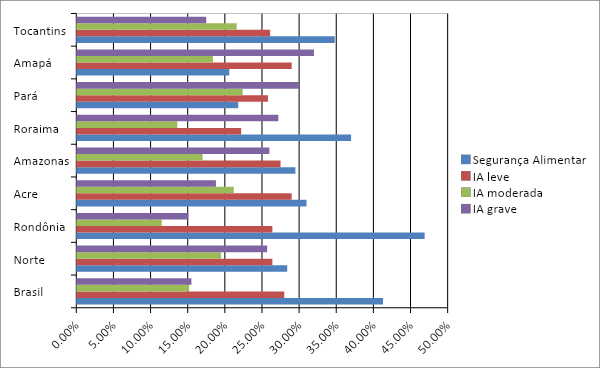
Distribuição percentual da Segurança Alimentar e dos níveis de Insegurança Alimentar (IA
leve, moderada e grave) nas Unidades da Federação, segundo as macrorregiões do Brasil. SA/IA
e Covid-19, Brasil, 2021/2022.
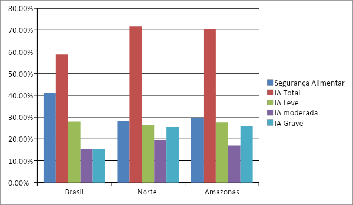
Distribuição percentual de domicílios e moradores (n), por condição de Segurança Alimentar e
níveis de Insegurança Alimentar ( IA leve, moderada e grave) e localização do domicílio,
macrorregiões e Unidade da Federação. SA/IA e Covid-19, Brasil, 2021/2022.
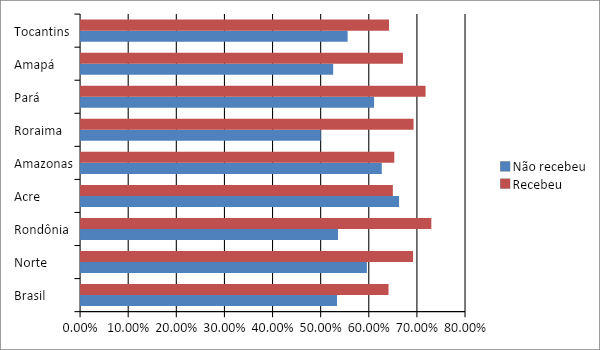
Distribuição percentual de Insegurança Alimentar moderada mais grave nos domicílios, segundo
recebimento de transferência de renda pelos programas PBF/Auxílio Brasil, em domicílios com
renda per capita de até ½ salário mínimo, Brasil, macrorregiões e Unidades da Federação.
SA/IA e Covid-19, Brasil, 2021/2022.
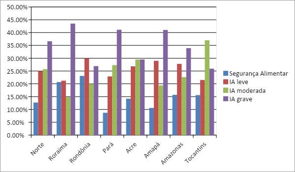
Distribuição percentual de a Segurança Alimentar e níveis de Insegurança Alimentar (IA leve,
moderada e grave) nos domicílios, segundo situação de endividamento nas famílias,
macrorregião Norte e Unidades da Federação. SA/IA e Covid-19, Brasil, 2021/2022.
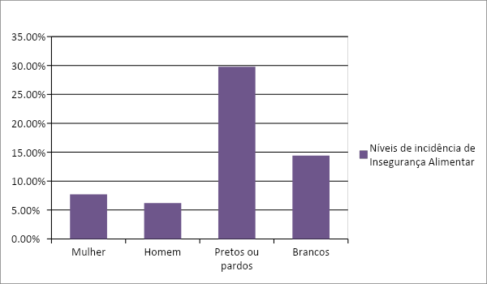
Níveis de incidência de Insegurança Alimentar, com relação a pessoa de referência, na região
Norte, 2021
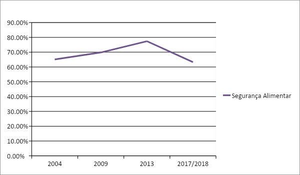
Prevalência nacional de Segurança Alimentar (SA) nos domicílios no Brasil – IBGE
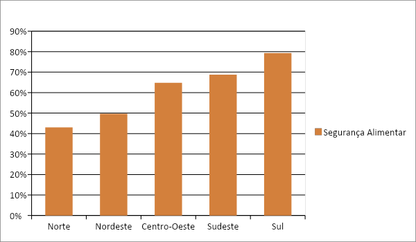
Prevalência de Segurança Alimentar nas regiôes brasileiras entre 2017-2018 IBGE
Insegurança Alimentar (IA) na população residente brasileira entre 2017-2018, IBGE
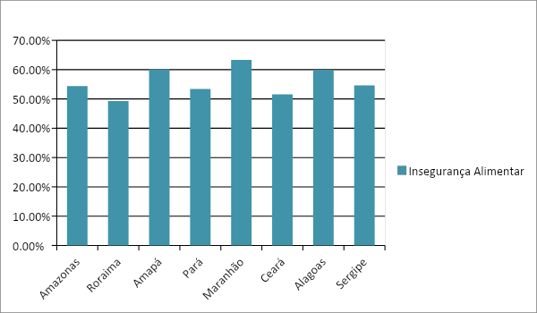
Insegurança Alimentar moderada e grave, nos domicílios com presença de menores de 10 anos,
Brasil. II VIGISAN - SA/IA e Covid-19, Brasil, 2021/2022.
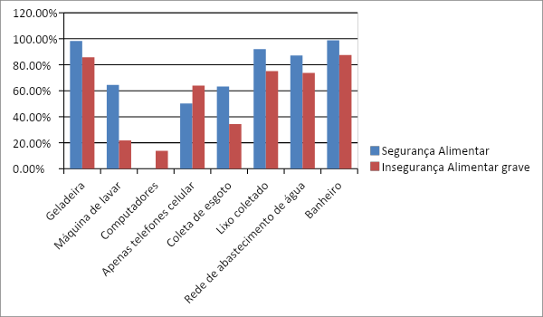
Características dos domicílios do Brasil - 2013 IBGE